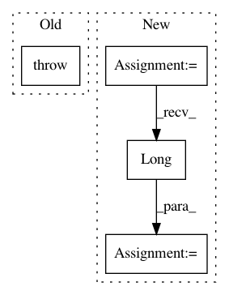

6f8f7608d6d603b49bef0249f169ef413d6e7371,src/codebase/tasks.py,Task,_evaluate,#Task#Any#Any#,38
Before Change
"""
Method for scoring model predictions against targets
"""
raise NotImplementedError
def validate(self, model):
"""
Get validation scores for model
After Change
outs = model(ins, self.pred_layer, self.pair_input)
_, preds = outs.max(1)
pdb.set_trace()
score += torch.sum(torch.eq(preds.long(), targs)).data[0]
return score / len(data)
def validate(self, model):
"""
In pattern: SUPERPATTERN
Frequency: 3
Non-data size: 4
Instances
Project Name: jsalt18-sentence-repl/jiant
Commit Name: 6f8f7608d6d603b49bef0249f169ef413d6e7371
Time: 2017-11-07
Author: wang.alex.c@gmail.com
File Name: src/codebase/tasks.py
Class Name: Task
Method Name: _evaluate
Project Name: cornellius-gp/gpytorch
Commit Name: 7e9154fdc79281420d027c7892c395946622ee40
Time: 2017-08-25
Author: gpleiss@gmail.com
File Name: gpytorch/lazy/toeplitz_lazy_variable.py
Class Name: ToeplitzLazyVariable
Method Name: __getitem__
Project Name: Scitator/catalyst
Commit Name: 1a73a1367fedfa8368b6c42103e60e1b370bc14a
Time: 2019-04-19
Author: scitator@gmail.com
File Name: catalyst/contrib/criterion/focal_loss.py
Class Name: FocalLoss
Method Name: forward